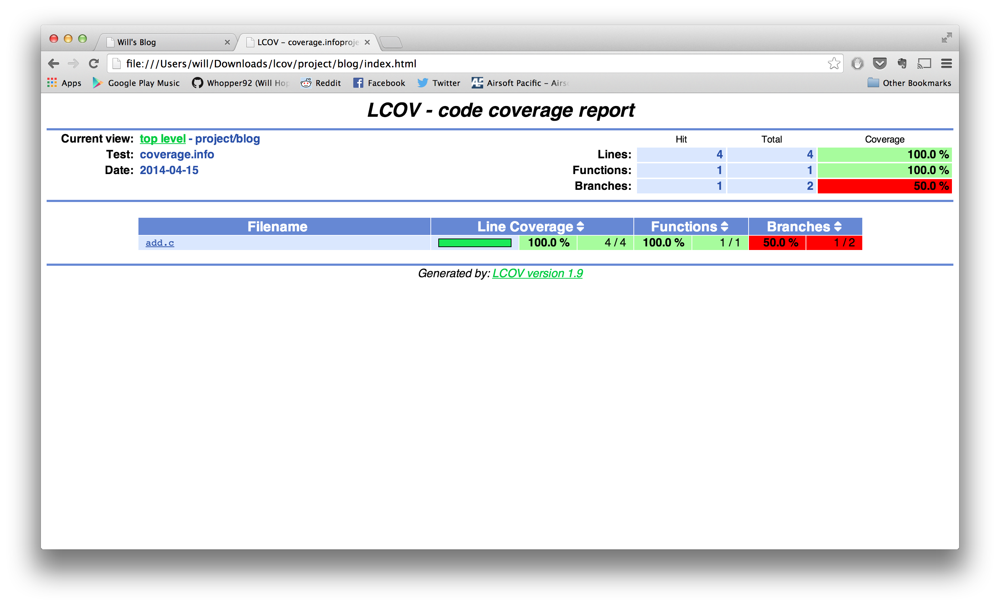

The following is a plain and simple, no nonsense guide on how to quickly get a test suite up and running for any project using DejaGnu and related tools. For the purposes of this tutorial I will assume you already know what DejaGnu is, at least in a vague sense. If not, read up on it here!
I'll also be going over the usage of Gcov and Lcov along with DejaGnu tests. These are cool, fairly simple tools that can really help analyze test coverage. See Gcov and Lcov for more information.
Now, obviously we are going to need some sort of project to test in order to get the most out of DejaGnu. This guide will use an incredibly simple C program to best illustrate the finer features of the tool. Check it out below:
#include <stdio.h>
main(int argc, char *argv[]) {
if(argc != 3) {
printf( "Usage: %s int1 int2\n", argv[0] );
} else {
printf ( "%d\n", atoi(argv[1]) + atoi(argv[2]) );
}
}
All we're doing here is adding the two command line arguments provided and printing the result. Note that I'm too lazy to do any error checking on the inputs, but that really doesn't matter for our purposes.
We'll set this code in a file called 'add.c' inside of a directory named 'add'. All of the files we create from now on should also end up in this directory.
We'll also need the tests themselves! Create a directory alled 'test', and inside of that another directory called 'add'. This is where we will store all of our Expect tests. For this tiny program, go ahead and insert the following tests into a file called 'test-add.exp' inside of the new directory:
set tool "add"
set exp_internal 1
set testdata {
{"1 1" "2" }
{"" "Usage: ./add int1 int2" }
}
global ADD
foreach pattern $testdata {
set inputs [lindex $pattern 0]
eval "spawn $ADD $inputs"
expect {
-re [lindex $pattern 1] {
pass $inputs
}
default { fail $inputs }
}
}
For a C project like this, it's quite helpful to automatically generate Makefiles and such to help automatically run test suites. The intricacies of Autotools are out of the scope of this guide, so I'll simply be demonstrating which files you'll need to get going.
First of all, let's prepare our Autotool configuration. Open up a new file called 'configure.ac' and add the following:
AC_PREREQ(2.5) AC_INIT(add.c) AM_CONFIG_HEADER(config.h) AM_INIT_AUTOMAKE(libsort,0.0.1) AC_PROG_CC AC_OUTPUT(Makefile)
The only thing we really had to setup here was the AC_INIT option, which should be changed to the entry source file for our program. The rest of the options should be universal for other projects.
Next, we'll need to configure our soon to be Makefile. Open another new file named 'Makefile.am' and insert the following:
AUTOMAKE_OPTIONS= dejagnu bin_PROGRAMS = add add_SOURCES = add.c AM_CPPFLAGS = CLEANFILES = *~ DISTCLEANFILES = .deps/*.P EXTRA_DIST= test AM_CFLAGS= --coverage RUNTESTDEFAULTFLAGS = --tool add ADD=`pwd`/add --srcdir $$srcdir/test
Notice that we've set the properties bin_PROGRAMS, add_SOURCES and RUNTESTDEFAULTFLAGS to use our add program. Obviously, these will need to be changed depending on the name of the project and the source code files involved.
Finally, we're going to add a small shell script to the project which will handle the auto generation of all of the stuff we need. Make a new file called 'autogen.sh' and add the following:
#!/bin/sh
autoreconf --force --install -I config -I m4
Excellent! Now we're almost ready to begin! Before we can run our autogen script, we'll need to create a few directories and files for Automake. If we don't it will scream at us and fail. Run the following command:
will add> mkdir config m4 && touch NEWS README AUTHORS ChangeLog
With this done, go ahead and run your autogen.sh script. You may need to make it executable if you haven't already.
will add > chmod +x autogen.sh && ./autogen.sh
You should now see quite a few additional files in your project directory, sort of like this:
will add> ls aclocal.m4 autogen.sh config configure depcomp m4 missing add.c autom4te.cache config.h.in configure.ac INSTALL Makefile.am NEWS AUTHORS ChangeLog config.h.in~ COPYING install-sh Makefile.in README
If all looks well, go ahead and run the automatically generated configure script, and then run make:
will add> ./configure will add> make
This will compile the program with the --coverage flag - something which will become important when we start using Gcov.
With the program compiled, we can now run our fancy tests that we added to the ./test/add directory earlier. Simply run:
will add> make check
Test Run By will on Tue Apr 15 20:47:30 2014
Native configuration is x86_64-unknown-linux-gnu
=== add tests ===
Schedule of variations:
unix
Running target unix
Using /usr/share/dejagnu/baseboards/unix.exp as board description file for target.
Using /usr/share/dejagnu/config/unix.exp as generic interface file for target.
WARNING: Couldn't find tool config file for unix, using default.
Running ./test/add/test-add.exp ...
=== add Summary ===
# of expected passes 2
... And just like that, DejaGnu will run all of our tests and tell us which pass and which fail! It's magic!
Luckily, getting Gcov to work with our tests is quite easy. In fact, we've already done most of the work by adding the --coverage flag to our Makefile! After you've run your tests, just run the following command to get coverage stats for the program:
will add> gcov add.c File 'add.c' Lines executed:100.00% of 4 Creating 'add.c.gcov' File '/usr/include/x86_64-linux-gnu/bits/stdio2.h' Lines executed:100.00% of 1 Creating 'stdio2.h.gcov'
A summary of all tests can be found in the automatically generated 'add.sum' file, while a log of Gcov's output can be found in 'add.log'
The last step to properly viewing test coverage is to run Gcov's data through Lcov, which simply generates nice HTML files to show us the numbers. We only need to run two commands to get the goods:
will add> lcov -t 'add' -o coverage.info -c -d . && genhtml -o lcov coverage.info Capturing coverage data from . Found gcov version: 4.8.1 Scanning . for .gcda files ... Found 1 data files in . Processing add.gcda Finished .info-file creation Reading data file coverage.info Found 2 entries. Found common filename prefix "/home/ubuntu/PortlandState/spring2014/softwareTesting/project1" Writing .css and .png files. Generating output. Processing file project/blog/add.c Processing file /usr/include/x86_64-linux-gnu/bits/stdio2.h Writing directory view page. Overall coverage rate: lines......: 100.0% (5 of 5 lines) functions..: 100.0% (1 of 1 function) branches...: 50.0% (1 of 2 branches)
Note that Lcov sometimes complains about an unexpected end of file in the Gcov output. If you encounter this, simply run `make clean && make`, delete all of the add.gc* files, and re-run your tests. You should then be able to propery run Lcov as above.
Finally, after all of this hard work, we can see the fruits of our labor. In the newly generated lcov directory, you will find a bunch of HTML, CSS and images. You'll need to serve this directory up on a webserver, and you'll then be able to navigate to it and see something like the following:
That's it! We're done! I hope this guide was helpful in figuring out the very basics of DejaGnu, Gcov and Lcov!